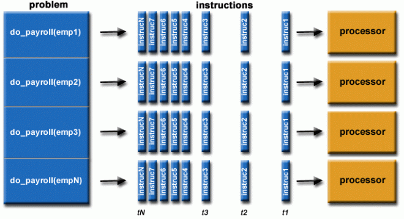
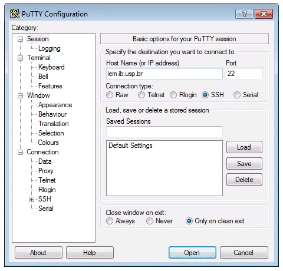
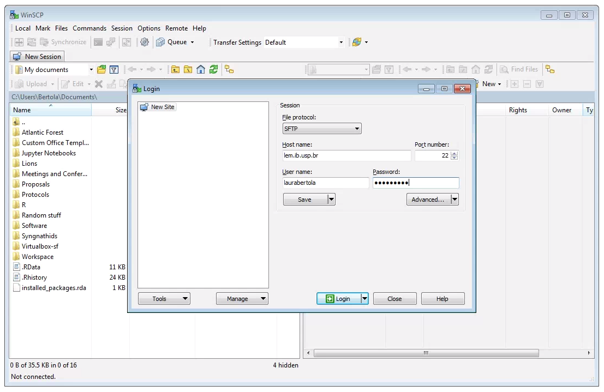
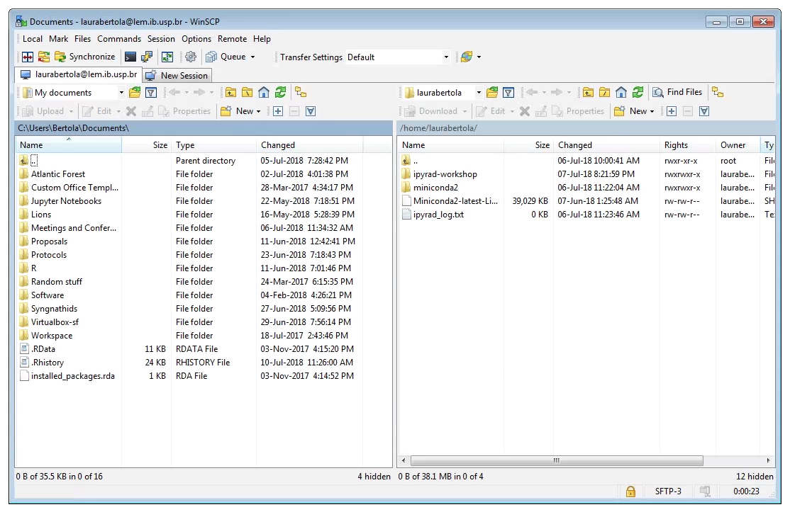

Parallel computing: Making use of multiple CPUs¶
Up to this point we have not been focusing too much on optimization or scaling, meaning to make things run faster and use more resources. For our in-class projects it's not so important to think about this because we are (in general) doing simple things that will run quickly on a single CPU. Today we are going to talk about scaling computation to multiple CPUs.
Serial Computing¶
Traditionally, software has been written for serial computation:
- A problem is broken into a discrete series of instructions
- Instructions are executed sequentially one after another
- Executed on a single processor
- Only one instruction may execute at any moment in time

Parallel Computing¶
In the simplest sense, parallel computing is the simultaneous use of multiple compute resources to solve a computational problem:
- A problem is broken into discrete parts that can be solved concurrently
- Each part is further broken down to a series of instructions
- Instructions from each part execute simultaneously on different processors
- An overall control/coordination mechanism is employed 
Parallel processing with python¶
Of course you are probably aware your laptop has more than one CPU, and the
question arises: "How do you make your python code run with more than
one CPU? Wouldn't that be great!?" Fortunately this is something everyone
wants to do, so there are many libraries for doing this. We will focus on
concurrent.futures from the python standard library.
You can get more info from the official documentation page for
concurrent.futures.
How many cores does your laptop have?¶
You can query the number of cores your laptop has with a simple python script, or you can even just run this in the python interpreter (probably easier that way).
import os
os.cpu_count()
Notes
It is sometimes the case that you'll hear people talk about CPUs, or cores, or processors. To a first approximation these are all synonyms so for this lesson I will call these 'cores'.
Getting started with concurrent.futures¶
Let's start with a simple parallel program to calculate the square
of a list of integer values. Open a new text file, rename it parallel.py,
and enter this text:
import numpy as np
import sys
import time
from concurrent.futures import ProcessPoolExecutor, as_completed
## Use sys.argv to pass in an integer value for the number
## of consecutive integers to operate on
length = int(sys.argv[1])
def task(n):
time.sleep(1)
return n * n
if __name__ == '__main__':
numbers = range(0, length)
## create a pool of workers
## max_workers determines the number of parallel process to run
with ProcessPoolExecutor(max_workers=4) as executor:
## Submit all the jobs to the executor
results = [executor.submit(task, num) for num in numbers]
## As jobs finish, pull the results and print them
for future in as_completed(results):
print(f"Result: {future.result()}")
python parallel.py 10 <- The first argument will be the max
value of consecutive integers to operate on.
Notes
sys.argv is a quick and dirty replacement for argparse
Here we are using the very simple sys.argv module for parsing
command line arguments. sys.argv[0] is the name of the executed
file, and sys.argv[1] is the first argument at the command line.
Run this program several times and you should see that the results change slightly between runs. Here is an example output:
$ python parallel.py 10
Result: 9
Result: 4
Result: 1
Result: 0
Result: 16
Result: 36
Result: 49
Result: 25
Result: 64
Result: 81
Introduction to High-Performance Computing¶
What are HPC systems?¶
High performance computing (HPC) is the practice of aggregating computing resources to gain performance greater than that of a single workstation, server, or computer. HPC can take the form of custom-built supercomputers or groups of individual computers called clusters. HPC can be run on-premises, in the cloud, or as a hybrid of both. Benefits of HPC include:
Speed and performance: High performance computing can process data and tasks much faster than a single server or computer. Tasks that could take weeks or months on a regular computing system can take hours in HPC.
Flexibility and efficiency: With HPC in the cloud, workloads can be scaled up or down depending on need. With a robust internet connection, HPC can be accessed from anywhere on the globe.
Cost savings: Because of the speed, flexibility, and efficiency of HPC in the cloud, organizations can save time and money on computing resources and labor hours.
Fault tolerance: If one node of an HPC cluster fails, the system is resilient enough that the rest of the system does not come crashing down. Given the large and complex tasks performed by HPC, fault tolerance is a big advantage.
Common structure: Login Node & Compute Nodes¶
Each computer in a cluster is often called a node, with each node responsible for a different task. Controller nodes run essential services and coordinate work between nodes, interactive nodes or login nodes act as the hosts that users log in to, either by graphical user interface or command line, and compute or worker nodes execute the computations.
Columbia's Insomnia Cluster¶
For this exercise we will be using the Insomnia cluster at Columbia. Full documentation for working with this system is available on the Research Computing Documentation page (you have to log in with your UNI, for some reason they keep the docs access protected).
Insomnia has 70 nodes with a cluster total of 11200 cores (80 physical cores per node, doubled via hyperthreading) running Red Hat Enterprise Linux 9.3
- 42 Standard Nodes (512 GB ram)
- 15 High Memory Nodes (1 TB ram)
- 10 GPU Nodes with two Nvidia L40 GPU modules
- 3 GPU nodes with two Nvidia H100 GPU modules
Logging in with SSH¶
Most (but not all) HPC systems are accessed through a secure shell connection (SSH), so in order to work with the Insomnia cluster we'll need to get an ssh command line client.
SSH for Mac OS / Linux¶
On Mac and linux you actually don't need to do anything because there
are native ssh clients already installed. You can simply open a terminal
and ssh to the Insomnia cluster like this.
ssh <UNI>@insomnia.rcs.columbia.edu
SSH for Windows¶
Windows computers need to use a 3rd party app for connecting to remote computers. The best app for this in my experience is puTTY, a free SSH client. Right click and Save link as on the 64-bit binary executable link.
After installing puTTY, open it and you will see a box where you can enter the Host Name (or IP Address) of the computer you want to connect to (the host). To connect to the USP cluster, enter: insomnia.rcs.columbia.edu. The default Connection Type should be SSH, and the default Port should be 22. Its good to verify these values. Leave everything else as defualt and click Open.

At first login¶
When you first log in you'll see a welcome message and your prompt will show something like this, including your username and the name of the login node you landed on:
[iao2122@2402-login-002 ~]$
Running HPC jobs with the SLURM scheduler¶
The SLURM Workload Manager (Simple Linux Utility for Resource Management) is a free and open-source job scheduler for Linux and Unix-like kernels, used by many of the world's supercomputers and computer clusters.
It provides three key functions:
- Allocating access to resources (computer nodes) to users for some duration of time so they can perform work
- Providing a framework for starting, executing, and monitoring work on a set of allocated nodes
- Arbitrating contention for resources by managing a queue of pending jobs
Running interactive mode¶
The easiest way to get going on a compute node is to launch a job in
interactive mode, which essentially means to just get a terminal
with some light resources on a compute node. You can use srun to start
an interactive mode terminal like this
# --pty Give me a 'pseudo-terminal'
# -t 0-2:00 Give me 0 days and 2 hours of compute time
# -A I am in group 'edu' (the free group)
# /bin/bash Run this command on the compute node
srun --pty -t 0-2:00 -A edu /bin/bash
Wed Apr 16 iao2122@ins022 $
ins022!
Notes
Checking on running jobs with squeue
There are several SLURM commands for querying information about different
aspects of the cluster. One command you can use to look up information
about currently running jobs is squeue. If you want to know what the
status of your own running jobs is you can say:
$ squeue -u iao2122
JOBID PARTITION NAME USER ST TIME NODES NODELIST(REASON)
1322802 edu1 bash iao2122 R 7:22 1 ins022
If you say squeue with no other arguments it will show a huge list of
all the running and queued jobs on the cluster. Go ahead and try it!
Running our first HPC job¶
Normally when working with HPC systems you will want to run jobs that
take a long time and use lots of resources, so you won't want to run
these in interactive mode. Running a job on the HPC involves writing
a job submission script and then calling sbatch to submit your
job to the scheduler. Let's try it with a simple Hello World example
first.
Open a new text file with a command line editor called nano:
nano helloworld.sh
#!/bin/sh
#
# Simple "Hello World" submit script for Slurm.
#
# When running a real job you would replace `edu` with the ACCOUNT
# your login has access to, which will provision resources according to
# the allocation of this account.
#
#SBATCH --account=edu # The HPC account to use
#SBATCH --job-name=HelloWorld # The job name
#SBATCH -c 1 # The number of cpu cores to use (up to 160 cores per server as hyperthreading is enabled)
#SBATCH --time=0-0:30 # The time the job will take to run in D-HH:MM
#SBATCH --mem-per-cpu=5G # The memory the job will use per cpu core
echo "Hello World"
sleep 10
date
# End of script
Structure of an sbatch script¶
You can see that there is a kind of structure to this job submission script.
There is the header which includes the #!/bin/sh directive to run
the job as a shell script, and then any notes which are all preceded by #
signs indicating that they are comment lines. There is the config section
which includes all lines that start with #SBATCH which SLURM will interpret
as directives for parameterizing the job. And then there is the body
of the script where you can write lines of commands to execute.
Running a job on the cluster with sbatch¶
Now submit the job like this: sbatch helloworld.sh
The sleep 10 will cause the job to sleep for 10 seconds before exiting, so
you will have time to use squeue to see that your job is running. Try
running squeue -u <uni> and take note of the JOBID assigned to your run.
$ squeue -u iao2122
JOBID PARTITION NAME USER ST TIME NODES NODELIST(REASON)
1322802 edu1 bash iao2122 R 24:32 1 ins022
squeue several times, and when my
1322802 job finishes running it will stop showing up in my squeue results.
Now if I do an ls I will see a new file called slurm-1322802.out which
contains the logged standard output from the run of my job. If you cat
this file you should see the results:
$ cat slurm-1322802.out
Hello World
Wed Apr 16 09:38:30 PM EDT 2025
echo and a call to date, I can see the
"Hello World" and then the time and date at the end time my job completed.
Congratulations you have just run your first HPC job!
Transferring files to/from HPC (sftp)¶
Hello World was a toy example, so let's try to ramp it up a bit with a
still toy example, but a bit more involved. Let's copy our parallel.py
script up to the cluster and then use a job submission script to run
it on multiple cores.
Moving files between the cluster and your local computer is a very common task, and this will typically be accomplished with a secure file transfer protocol (sftp) client. Various Free/Open Source GUI tools exist but we recommend WinSCP for Windows and CyberDuck for MacOS.
Windows: After downloading, installing, and opening WinSCP, you will see the following screen. First, ensure that the File Protocol is set to SFTP. The connection will fail if SFTP is not chosen her. Next, fill out the host name (insomnia.rcs.columbia.edu), your username and password, and click Login.

Two windows file browsers will appear: your laptop on the left, and the cluster on the right. You can navigate through the folders and transfer files from the cluster to your laptop by dragging and dropping them.

MacOS: After downloading, installing, and opening CyberDuck you will
choose the "Open Connection" button and you'll see the following screen.
You'll need to set the protocol to "SFTP", ensure the Port is "22",
and set the Server as insomnia.rcs.columbia.edu. You can also fill
your username and password here, otherwise you'll be prompted for it.

Uploading parallel.py¶
After you get your scp program installed, browse to where you saved
parallel.py and upload it to your home directory on the cluster.
Challenge: Running your own job on the cluster¶
Your challenge is to create a new job submission script to run your
parallel.py program on the Insomnia cluster. You can start by copying
your helloworld.sh to parallel.sh but you'll have to modify it in a
couple ways:
- Change the job name
- Change -c to use more cores (don't use more than 16)
- Modify the section of the code block to run your
parallel.pyprogram for a bigger number of integers which you may choose. - Use
sbatchto submit your new job
Sub-challenge: Monitor your job progress¶
- Use
squeueto find the job ID of your runningparallel.sh - Use
tail -f slurm-<jobID>.outto 'watch' the progress of the output of your running job.